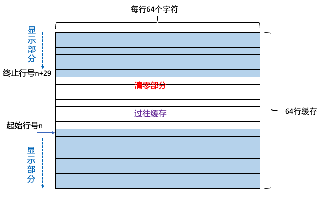
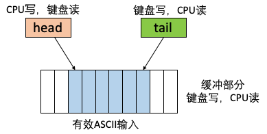

Lab 12: Computer Systems
“Next came a very large set of matched volumes containing reference materials: One contained designs for thousands of sleeve bearings, another for computers made of rods, still another for energy storage devices, and all of them were ractive so that she could use them to design such things to her own specifications. Then there were more books on the general principles of putting such things together into systems.”
— “The Diamond Age: A Young Lady’s Illustrated Primer”, Neal Stephenson
Lab Objectives
The goal of this lab is to implement a simple computer system on the FPGA of the DE10-Standard development board that can run simple instructions and process a certain amount of input and output. After all the functions have been developed, we hope to complete the basic terminal function, that is, keyboard input commands and output the results on the display. The following content is only a design reference. Students in this lab are free to use their imagination to complete various computer functions they have conceived. When implementing the project, students can choose to do part of it or make cuts and modifications according to their own interests.
Hardware Component
In the previous lab, we completed the core CPU part of the computer hardware. In this lab, we will integrate the previously completed peripheral components so that the CPU can truly interact with the peripherals. This will form a truly functional computer system. We recommend using memory mapping for communication between the CPU and peripherals. That is, specific memory addresses are predefined to correspond to the input or output of specific peripherals, and the CPU uses ordinary load/store instructions to read and write to these memory addresses to control the peripherals. Under this approach, the CPU hardware does not need to distinguish between memory addresses corresponding to peripherals and those corresponding to data RAM. The hardware only needs to place the correct data addresses and read/write signals on the bus and retrieve the data from the bus correctly. The specific meaning of the data can be handled by software. Peripherals only need to focus on a small portion of their own address space.
Peripheral Memory Mapping
The CPU has a 32-bit data address, and its addressable space can reach 4G bytes. The data storage implemented in our previous lab only occupied 128K bytes of space, so we can re-plan the CPU’s data address space to meet the requirements of both data storage and peripheral communication.
First, the space with the upper 12 bits of the address set to all zeros, i.e., 0x00000000 to 0x000fffff, can be allocated to our instruction memory.
Second, the address space with the upper 12 bits of the address set to 0x001 can be allocated to the data memory, which is used for constants, global variables, heap, and stack space required for normal program operation. Of course, in our system, the instruction memory and data memory are separate, but in practice, we can address them uniformly.
Finally, specific spaces can be allocated to each peripheral, distinguished by the high 12 bits of the address. For example, addresses starting with 0x002 can be allocated to the display, addresses starting with 0x003 can be allocated to the keyboard, and so on.
When the CPU reads or writes to memory, it places the 32-bit address it needs to access on the data address bus. At this point, we can determine which specific memory segment to use based on the upper 12 bits of the CPU’s accessed address. When writing, only the write enable bit for the corresponding memory is set to active. When reading, data can be read simultaneously from multiple different memory segments, and the appropriate data is selected based on the upper 12 bits of the address and placed on the CPU’s data bus. The basic idea is similar to dividing four pieces of RAM to provide 32-bit data in Lab 10.
Different address ranges can be implemented in different ways. For example, the data storage segment can be implemented using the large-capacity M10K storage in Lab 10. For peripherals, the storage capacity is generally small, so it can be implemented using a relatively free handwritten RAM method, as long as you pay attention to the read and write clock control.
Peripheral Memory Read/Write Design
Memory mapped to peripheral devices generally requires two or more read/write ports (i.e., two sets of address lines), one set for use by the CPU and one set for use by the peripheral device. This may result in read/write conflicts. Therefore, we need to analyze the read/write requirements of different peripheral devices for storage space. Typical peripheral storage may include the following types:
CPU read-only type: This type of peripheral mainly includes timers, switches on the board, etc. The space corresponding to this type of peripheral is relatively small, generally only 32 or 64 bits. We only need to assign the wire type variable corresponding to the peripheral to a specific register on the rising edge of the clock, and place the contents of the register on the CPU data bus when the CPU reads the matching address.
CPU write-only type: These types of peripherals are mainly output devices, such as monitors, LEDs, or seven-segment displays. In this case, the CPU always writes data on the rising edge, and the peripheral can read the corresponding data on each falling edge according to its own logic and place it in its own register to drive the peripheral. If necessary, when the storage capacity is small, a register file-like implementation can be used for asynchronous reading.
CPU simultaneous read/write type: In this case, the CPU and peripheral cannot write to the same address in the same cycle. This situation is very rare, and generally, specific spaces can be divided into CPU read-only or write-only areas through design. For specific designs, please refer to the keyboard space design below.
Common Peripheral Device Implementations
Below is a brief introduction to the implementation methods of common peripherals on the board.
LED: The CPU is only responsible for writing, which can be achieved with a single 32-bit register. Simply assign the corresponding bits of this register directly to the LED. The CPU software keeps a copy of the current LED status in its own storage space. When the LED brightness needs to be changed, it can operate on its own copy and then directly switch the copy to the corresponding LED address.
Seven-segment display: The CPU is only responsible for writing the BCD code to the seven-segment display. Similar to LEDs, it can also be implemented directly using a 32-bit register.
Timer: CPU read-only type. If a timer with millisecond or microsecond resolution is required, it can be achieved by dividing the system clock to generate a timing signal with 1 millisecond or 1 microsecond resolution. The timer accumulates counts and writes the data to the corresponding timer memory space at each rising edge of the clock. The timer width can be 32 bits or 64 bits. When the CPU needs to access the timer, it can directly read the corresponding timer data using the load instruction, thereby obtaining the number of milliseconds or microseconds elapsed from bootup to the current time. This functionality can be used to implement clocks or calculate program runtime. Interested students may also consider using methods such as min-heaps or time wheels to implement various timing functions in an operating system.
Switch: CPU read-only type. Simply connect the switch to a specific register to read the corresponding switch status through the Load instruction.
Display: CPU write-only. A certain amount of character memory can be allocated to the display, with each 8 bits corresponding to an ASCII code. For example, to support 64 rows \(\times\) 64 columns, only 4096 bytes of character cache are needed. This type of storage needs to support the CPU’s different bit width sb, sh, and sw instructions. In addition, some memory space corresponding to the control registers can be allocated separately. For example, a start line number register can be allocated to facilitate scrolling operations, or a color control register can be allocated to control the character and background colors. The CPU writes the video memory and display control registers on the rising edge of its own clock. The display part is similar to the function in our Lab 9, and only needs to read the ASCII code from the video memory and output it correctly. To implement scrolling and other functions, the display hardware can read ASCII codes starting from a given starting line number, then display the content of the next 30 lines (the line number can be a modulo 64 loop). This allows scrolling to be easily achieved by changing the starting line number. Note that it is recommended that the display device faithfully display only the ASCII characters in the video memory, while logic such as scrolling and clearing is implemented by CPU software. The display device can read the video memory using its own 25 MHz clock. If the CPU cannot reach this frequency, it does not significantly impact implementation. That is, even if the CPU writes slowly, the display device can still read the video memory at its own pace.

Fig. 83 Examples of video memory organization
Keyboard: It is recommended to implement the keyboard using a circular buffer. We first allocate memory space capable of storing 16 or 32 scan codes (4 bytes). At the same time, we set the head pointer head and the tail pointer tail. At this point, the keyboard hardware acts as the data generator responsible for writing to the buffer. The CPU serves as the data consumer, responsible for reading data from the buffer.
In this data structure, the head pointer is only written by the CPU, while the tail pointer and buffer are only written by the keyboard. Therefore, the CPU-only write and peripheral-only write regions can be separated, avoiding read-write conflicts.
When the keyboard receives a new key press, it reads the head and tail pointers. If tail = head - 1, it indicates the buffer is full and cannot be written to. Otherwise, the keyboard writes the corresponding scan code to the tail position and increments tail by 1.
For the CPU, whenever it needs to check for keyboard input, it can first read the head and tail pointers. If head == tail, it indicates the buffer is empty with no keyboard input, and the CPU can return directly to continue other tasks.
If head and tail are not equal, the CPU copies the scan code pointed to by the head pointer into its own memory and increments head by 1, indicating that the scan code has been read. This way, we can use the buffer to record a portion of the keystrokes, ensuring that the CPU does not lose keystrokes even when busy, while also enabling non-blocking keystroke reading.
After reading the scan codes, the CPU can use software to process the start and stop codes and convert the scan codes to ASCII. The specific software implementation can be designed as needed.
If the system only requires reading ASCII codes, ASCII codes can be directly placed in the buffer, meaning the conversion from scan codes to ASCII codes is handled by the hardware. This approach is less flexible than the software-based conversion method.

Fig. 84 Example of keyboard buffer organization
Specific implementation of memory mapping
In this experimental design, all data RAMs are implemented using a dual-port configuration, meaning the RAM provides separate read address lines, read data output ports, and read clock signals, as well as write address lines, write data input ports, and write clock signals. In this configuration, read and write operations are completely separated and can be designed independently. We can use separate RAM or registers to implement data storage space for different peripherals. For different peripheral read and write requirements, simply connect the peripheral data lines, address lines, and CPU data lines and address lines to the read/write interfaces of the corresponding peripheral data modules. Taking data storage as an example, data storage only needs to be connected to the CPU, so we connect the read/write address, clock, and memop signals directly to the CPU.
dmem datamem(.rdaddr(drdaddr), // CPU read address
.dataout(ddataout), // Data storage read data output
.wraddr(dwraddr), // CPU write address
.datain(ddatain), // CPU write data input
.rdclk(drdclk), // CPU read clock
.wrclk(dwrclk), // CPU write clock
.memop(dop), // CPU data operation type
.we(datawe)); // Data storage write enable.
In order to allocate address space, we need to perform data storage operations only when the CPU reads or writes addresses starting with 0x001. Therefore, there are two signals in the data storage that are not directly connected to the CPU. For write operations, we only need to control the write enable to determine whether to perform a write operation on the current storage, so we can first compare the address and then determine whether to enable the write:
assign datawe=(dwraddr[31:20]==12'h001)? dwe:1'b0;
This statement checks whether the upper 12 bits of the write address are 0x001. If so, the enable bit is written according to the write enable dwe output by the CPU; otherwise, it is never written. For read operations, we can select the data to be read from each memory block based on the upper bits of the CPU read address:
assign ddata=(drdaddr[31:20]==12'h001)? ddataout:
((drdaddr[31:20]==12'h003)? keymemout :32'b0 );
Here, when the high-bits of the address is 0x001, data storage output is selected, and when it is 0x003, keyboard output is selected. The display is not set because the CPU does not need to read it.
Software Component
After mapping the CPU and peripherals to memory, we can begin writing the software system. We recommend using the RISC-V C language toolchain to compile the software, which allows you to write the entire code in C.
Introduction to the Compilation Process
We need to use the riscv32-unknown-elf toolchain installed in the previous lab to compile the system software. Please write a suitable Makefile for compilation. We provide a simple makefile example as follows:
default: all
XLEN ?= 32
RISCV_PREFIX ?= riscv$(XLEN)-unknown-elf-
RISCV_GCC ?= $(RISCV_PREFIX)gcc
GCC_WARNS := -Wall -Wextra -Wconversion -pedantic -Wcast-qual -Wcast-align
-Wwrite-strings
RISCV_GCC_OPTS ?= -static -mcmodel=medany -fvisibility=hidden -Tsections.ld
-nostdlib -nolibc -nostartfiles ${GCC_WARNS}
RISCV_OBJDUMP ?= $(RISCV_PREFIX)objdump --disassemble-all --disassemble-zeroes
--section=.text --section=.text.startup --section=.text.init
--section=.data
RISCV_OBJCOPY ?= $(RISCV_PREFIX)objcopy -O verilog
RISCV_HEXGEN ?= 'BEGIN{output=0;}{ gsub("\r","",$$(NF)); if ($$1 ~/@/)
{if ($$1 ~/@00000000/) {output=code;} else {output=1- code;};
gsub("@","0x",$$1); addr=strtonum($$1); if (output==1)
{printf "@%08x\n",(addr%262144)/4;}}
else {if (output==1) { for(i=1;i<NF;i+=4)
print $$(i+3)$$(i+2)$$(i+1)$$i;}}}'
RISCV_MIFGEN ?= 'BEGIN{printf "WIDTH=32;\nDEPTH=%d;\n\nADDRESS_RADIX=HEX;
\nDATA_RADIX=HEX;\n\nCONTENT BEGIN\n",depth ; addr=0;} {
gsub("\r","",$$(NF)); if ($$1 ~/@/) { sub("@","0x",$$1);
addr=strtonum($$1);} else {printf "%04X : %s;\n", addr, $$1;
addr=addr+1;}} END{print "END\n";}'
SRCS := $(wildcard *.c)
OBJS := $(SRCS:.c=.o)
EXEC := main
.c.o:
$(RISCV_GCC) -c $(RISCV_GCC_OPTS) $< -o $@
${EXEC}.elf : $(OBJS)
${RISCV_GCC} ${RISCV_GCC_OPTS} -e entry $(OBJS) -o $@
${RISCV_OBJDUMP} ${EXEC}.elf > ${EXEC}.dump
${EXEC}.tmp: ${EXEC}.elf
$(RISCV_OBJCOPY) $< $@
${EXEC}.hex: ${EXEC}.tmp
awk -v code=1 $(RISCV_HEXGEN) $< > $@
awk -v code=0 $(RISCV_HEXGEN) $< > ${EXEC}_d.hex
${EXEC}.mif: ${EXEC}.hex
awk -v depth=65536 ${RISCV_MIFGEN} $< > $@
awk -v depth=32768 ${RISCV_MIFGEN} ${EXEC}_d.hex > ${EXEC}_d.mif
.PHONY: all clean
all: ${EXEC}.mif
clean:
rm -f *.o
rm -f *.dump
rm -f *.tmp
rm -f *.elf
rm -f *.hex
rm -f *.mif
The contents defined in Makefile mainly include:
Lines 3-6: define the toolchain compilation commands and the warning level for GCC.
Lines 8-9: define the linking parameters for GCC. Note that static linking is used here, and all standard library links are disabled. Additionally, sections.ld is used to specify the segment addresses for the binary file. For more details, refer to the explanation of the sections.ld file later in this document.
Lines 10-13: similar to the previous lab, defining the parameters of OBJDUMP and OBJCOPY.
Lines 14-19: use awk to convert the output hexadecimal text file and generate a 4-byte hex file that Verilog can read. At the same time, the code segment and data segment are separated.
Lines 20-24: use awk to rewrite the hex file, generating Quartus-supported mif files to initialize the instruction memory and data memory.
Lines 26-35: scan all .c files in the directory to prepare for generating all corresponding .o files, and finally link all .o files to generate the main.elf binary executable file.
Lines 37-46: after generating main.elf, convert the binary file into the corresponding main.mif and main_d.mif files in multiple steps to initialize the instruction memory and data memory.
Lines 48-58: define the basic operations of make; make clean clears all output files.
Students can learn and understand the Makefile writing rules on their own and adapt them to the needs of their actual projects.
During the Make process, we use the sections.ld file to specify the address mapping of the executable file. An example of this file is as follows:
ENTRY(entry)
OUTPUT_FORMAT("elf32-littleriscv")
SECTIONS {
. = 0x00000000;
.text : {
*(entry)
main.o (.text)
*(.text*)
*(text_end)
}
etext = .;
_etext = .;
. = 0x00100000;
.rodata : {
*(.rodata*)
}
.data : {
*(.data)
}
edata = .;
_data = .;
.bss : {
_bss_start = .;
*(.bss*)
*(.sbss*)
*(.scommon)
}
_stack_top = ALIGN(1024);
. = _stack_top + 1024;
_stack_pointer = .;
end = .;
_end = .;
_heap_start = ALIGN(1024);
This file mainly specifies the address allocation of binary executable files. First, line 1 specifies the program entry point as the entry function (this is not necessary in our system). Starting from line 5, we specify the layout of code and data. The most important part is the .text code segment. In our hardware, we specify that execution begins at address 0x00000000 after reset, so we need to specify that the code segment begins at 0x00000000. Furthermore, we need to place our entry function entry at the beginning of the code segment, as specified in line 7. The order of subsequent functions can be customized.
Line 14 specifies that the data segment starts at address 0x00100000, which is consistent with our hardware specifications. In the Makefile, we also use awk to extract the contents of the data segment (by default, all non-code data is placed in the data storage) and place them in main_d.mif to initialize the data storage.
We do not need to initialize the memory-mapped output address space, so it is not reflected in the binary executable.
Hello World Example
We provide a simple Hello World code for your reference. The content of main.c is as follows:
The main file first includes the system’s custom header file. In line 3, a global variable is used to store the string “Hello World.” This data will be placed in the data segment after compilation.
Program Entry: In lines 7-13 of the code, we define an entry function. This function initializes the system stack and calls the main function. During the linking process, we place this function at the starting address 0x00000000 using sections.ld. The main purpose of using the entry function is to initialize the stack pointer. The operating system initializes sp before calling the main function. However, in our bare-metal program, sp always starts with all zeros. If it is not initialized, the first statement in the main function will adjust sp to 0xffffffff0, accessing a non-existent portion of our address space.
00000030 <main>:
30: ff010113 addi sp,sp,-16
34: 00112623 sw ra,12(sp)
38: 00812423 sw s0,8(sp)
3c: 01010413 addi s0,sp,16
40: 1f8000ef jal ra,238 <vga_init>
44: 00100517 auipc a0,0x100
48: fbc50513 addi a0,a0,-68 # 100000 <hello>
4c: 324000ef jal ra,370 <putstr>
50: 0000006f j 50 <main+0x20>
The entry function forces the assembly to reset sp, placing it at the top of our data segment at 0x0011fffc, thus ensuring that the stack is accessible during code execution. Of course, when the main function returns to entry, the system state will be abnormal, so the main function is required not to return and to go through an infinite loop internally called Halt.
00000000 <entry>:
0: ff010113 addi sp,sp,-16
4: 00112623 sw ra,12(sp)
8: 00812423 sw s0,8(sp)
c: 01010413 addi s0,sp,16
10: 00120137 lui sp,0x120
14: ffc10113 addi sp,sp,-4 # 11fffc <_end+0x1f7fc>
18: 018000ef jal ra,30 <main>
1c: 00000013 nop
20: 00c12083 lw ra,12(sp)
24: 00812403 lw s0,8(sp)
28: 01010113 addi sp,sp,16
2c: 00008067 ret
The main function is relatively simple, primarily initializing the VGA buffer and calling a library function to output “Hello World.” Upon completion, it enters an infinite loop.
The sys.h header file defines basic constants such as the starting address of the VGA buffer and the number of VGA rows and columns, as well as some library functions. Students can write their own input and output library functions or port some of the code from PA.
#define VGA_START 0x00200000
#define VGA_MAXLINE 30
#define VGA_MAXCOL 70
void putstr(char* str);
void putch(char ch);
void vga_init(void);
In sys.c, we implement some output library functions, including putch, putstr, etc.
#include "sys.h"
char* vga_start = (char*) VGA_START;
int vga_line=0;
int vga_ch=0;
void vga_init(){
vga_line = 0;
vga_ch =0;
for(int i=0;i<VGA_MAXLINE;i++)
for(int j=0;j<VGA_MAXCOL;j++)
vga_start[ (i<<7)+j ] =0;
}
void putch(char ch) {
if(ch==8) //backspace
{
//TODO
return;
}
if(ch==10) //enter
{
//TODO
return;
}
vga_start[ (vga_line<<7)+vga_ch] = ch;
vga_ch++;
if(vga_ch>=VGA_MAXCOL)
{
//TODO
}
return;
}
void putstr(char *str){
for(char* p=str;*p!=0;p++)
putch(*p);
}
After compiling and outputting main.mif, we can use Quartus’s In-System Memory Content Editor to update the instruction memory. This saves time by eliminating the need to recompile the entire hardware after each software modification. Since our data memory is dual-port RAM, Quartus does not support real-time modifications to dual-port RAM. Therefore, if global variables in the code are changed, main_d.mif must be updated and the entire hardware recompiled. If you need to update the data segment in real time, we recommend modifying the hardware to add a read-only data storage and then using memcopy to copy the read-only storage to the actual data memory at the start of the main function.
Execution of Unimplemented Instructions
RV32I instructions don’t have multiplication instructions. However, when gcc encounters integer multiplication during compilation, it directly calls the software multiplication function mulsi3 to perform integer multiplication in software. If you need integer multiplication or division in your code, refer to the gcc implementation of __mulsi3 and link the corresponding function into your main program.
unsigned int __mulsi3(unsigned int a, unsigned int b) {
unsigned int res = 0;
while (a) {
if (a & 1) res += b;
a >>= 1;
b <<= 1;
}
return res;
}
unsigned int __umodsi3(unsigned int a, unsigned int b) {
unsigned int bit = 1;
unsigned int res = 0;
while (b < a && bit && !(b & (1UL << 31))) {
b <<= 1;
bit <<= 1;
}
while (bit) {
if (a >= b) {
a -= b;
res |= bit;
}
bit >>= 1;
b >>= 1;
}
return a;
}
unsigned int __udivsi3(unsigned int a, unsigned int b) {
unsigned int bit = 1;
unsigned int res = 0;
while (b < a && bit && !(b & (1UL << 31))) {
b <<= 1;
bit <<= 1;
}
while (bit) {
if (a >= b) {
a -= b;
res |= bit;
}
bit >>= 1;
b >>= 1;
}
return res;
}
Lab check-in contents
On-Board Check-in
This lab is conducted in groups and requires only a on-board check-in. During this check-in, a complete computer system must be demonstrated. Required functions include:
Accept keyboard input and display it on the screen.
Support operations such as line breaks, deletions, and scrolling.
Command analysis: Execute the corresponding subroutine based on keyboard input commands and output the results to the screen.
Type “hello” to display “Hello World!”
Type “time” to display the time
Type “fib n” to calculate the Fibonacci sequence and display the result
Type unknown commands to display “Unknown Command.”
The computer system described above already possesses the basic capabilities of a late 1980s personal computer. Such a system can perform many interesting functions. Interested students are welcome to explore and implement additional functions. These additional functions may include, but are not limited to, the following.
Optional Hardware Features:
Implement a five-stage pipelined CPU
Expand the CPU instruction types to include system calls, multiplication and division, or custom instructions
Support a simple interrupt mechanism
Increase the number of peripherals, including support for onboard LEDs and seven-segment displays
Increase the display complexity and provide a simplified graphical interface
Optional Software Features:
Input simple expressions, such as (9+6*6)-3, and output the result.
Implement simple C language library functions, port them from other courses, such as the code for AM in the advanced class PA.
Compile and run popular benchmarks to evaluate CPU performance